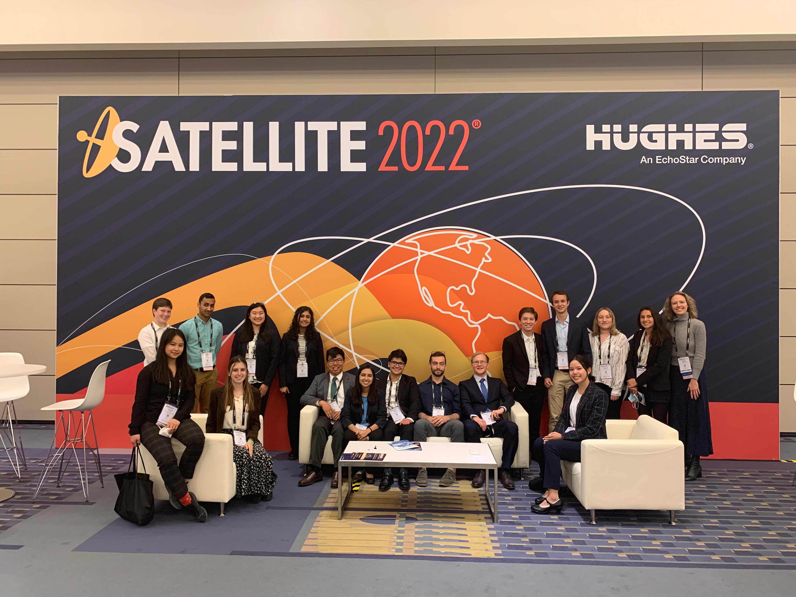
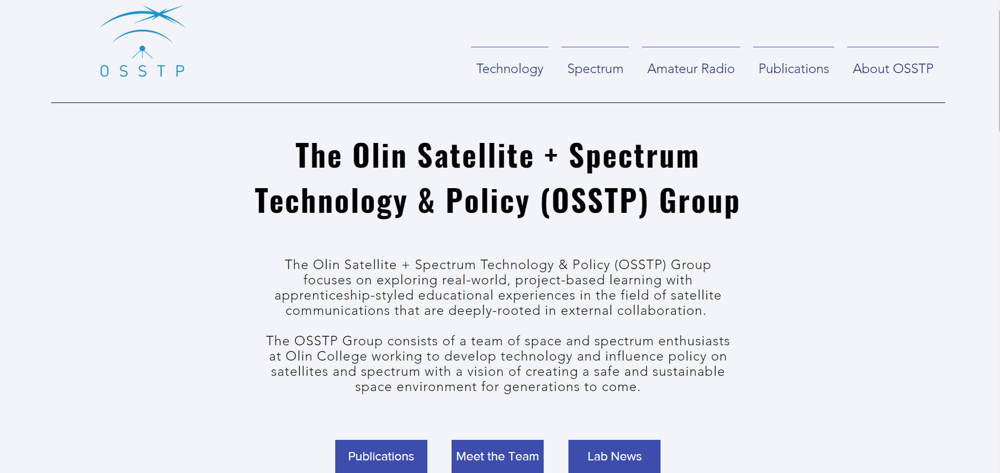
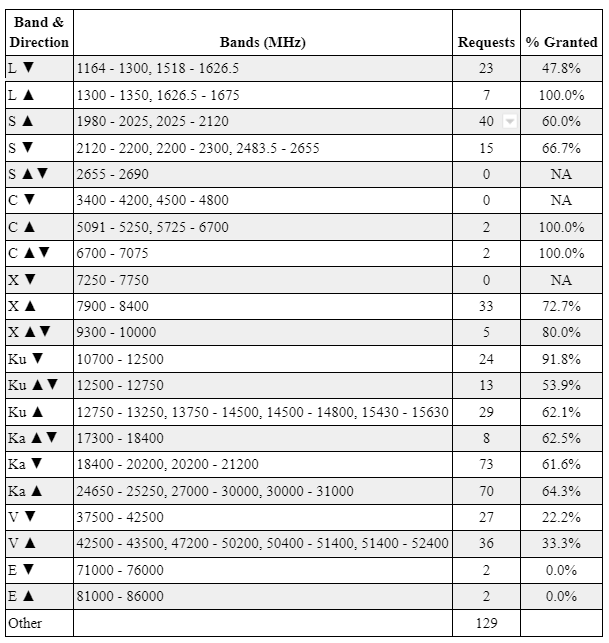
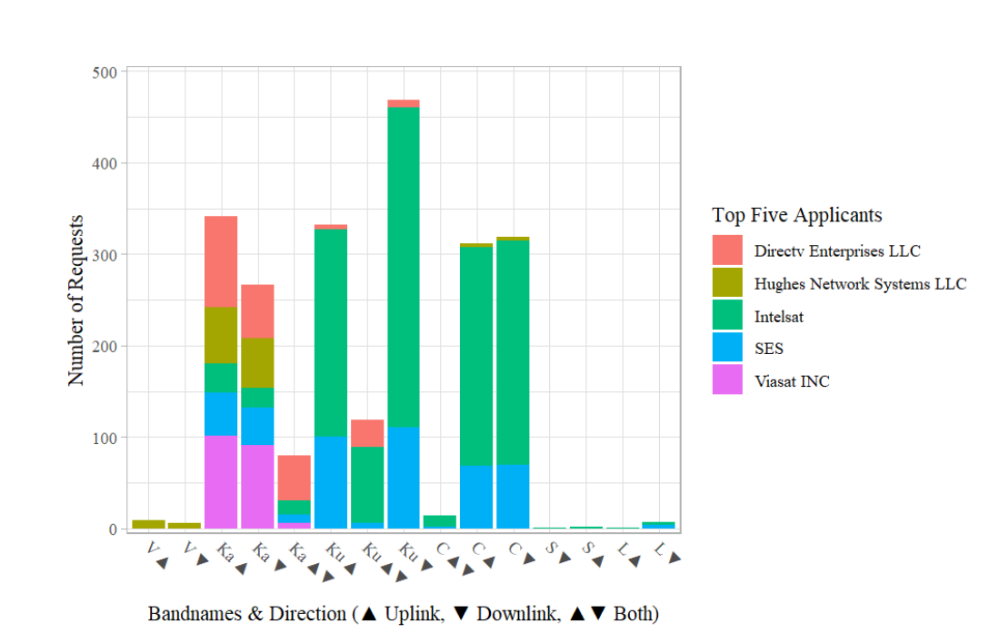

EXTRACURRICULAR / 2022
OSSTP Undergraduate Research — Data Analyst & UI

Designed a new website design for OSSTP and maintenance — moving the site over from their older Google Sites page. Worked to implement automated features.
Created data visualizations and reports from analyzing Federal Communication Committee satellite filings.
Developed and edited satellite communications undergraduate course textbook.
Preparing application as a team for ARDC Grant: $6,000.
Ku band analysis per FCC filing using Python


